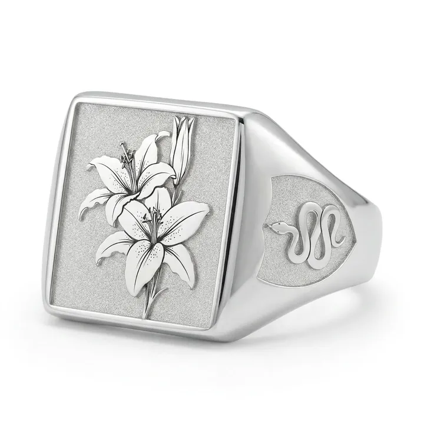
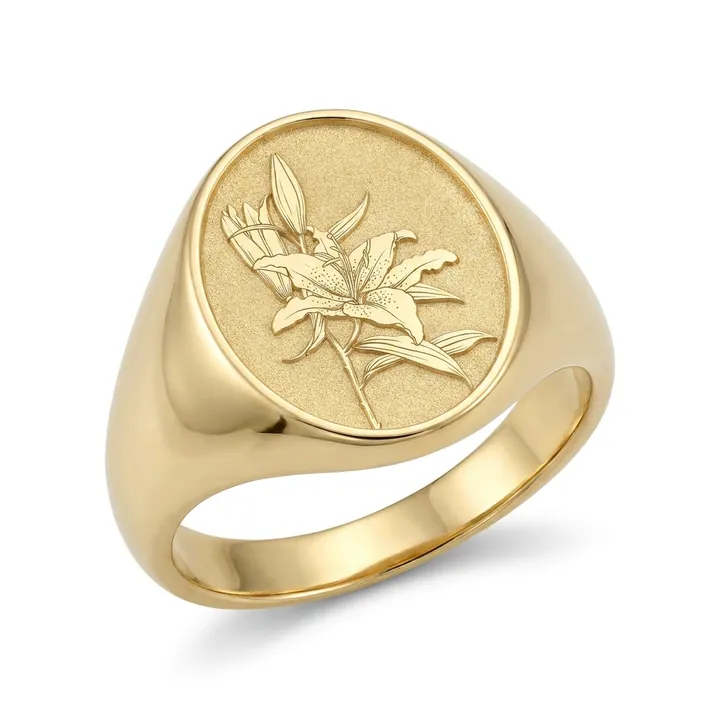
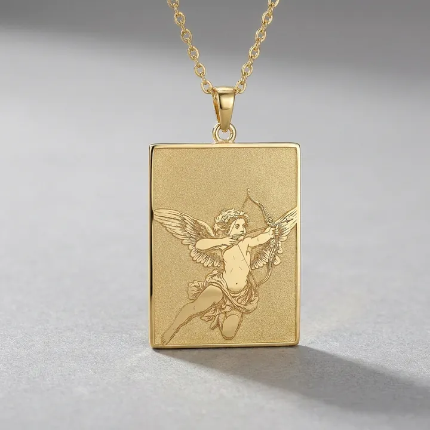
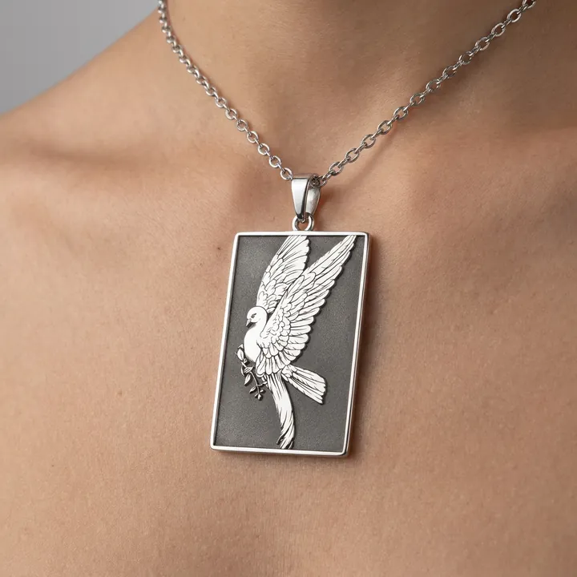

Fotoğraf
Bir çiçek, bir portre, bir sembol. Sana bir şey hatırlatan herhangi bir görselle başla.
Kişiye özel mücevher tasarımı
Bir görsel yükle. Atelify onu kazımaya hazır bir gravür çizimine, çizimi de gerçek bir yüzüğe ya da kolyeye dönüştürsün.

Bir çiçek, bir portre, bir sembol. Sana bir şey hatırlatan herhangi bir görselle başla.
Yapay zekâ konuyu korur ve onu metale kazınmaya hazır, temiz bir gravür çizimine çevirir.
Çizim gerçek yüzük ve kolye kalıplarına oturur. Sipariş vermeden önce sonucu görürsün.


Her aşamayı aynı proje içinde ilerletirsin; istediğin noktada durup siparişe geçebilirsin.
Görselini yükle; yapay zekâ kazımaya hazır bir çizime çevirir.

Çizim gerçek yüzük ve kolye kalıplarına oturur. Ücretsiz.
Satışa hazır stüdyo ve sahne fotoğrafı.

Ürünü elde ya da boyunda gör.
Her parça tek bir görselden başladı. Hiçbiri hazır bir katalogdan seçilmedi.






Fotoğraftan siparişe kadar bütün akışı kısa bir filmde izle.